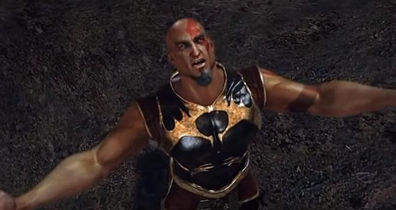
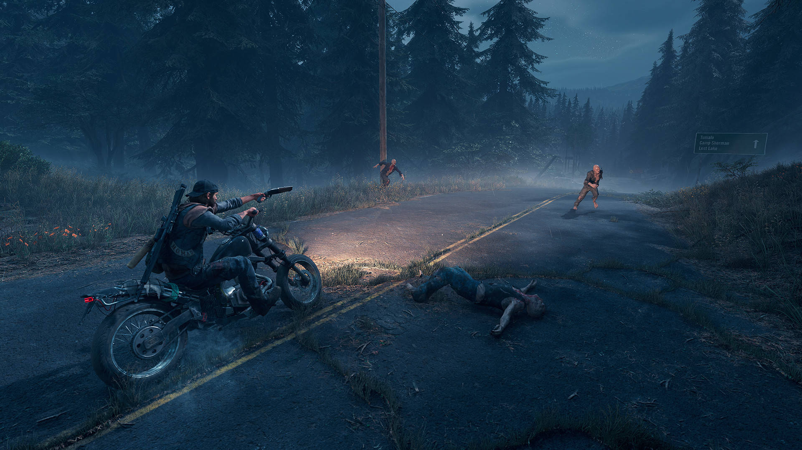
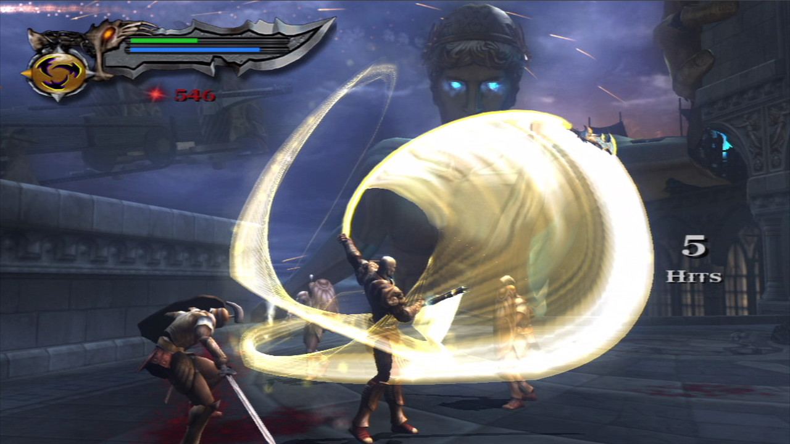
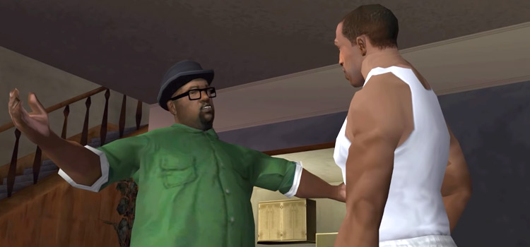
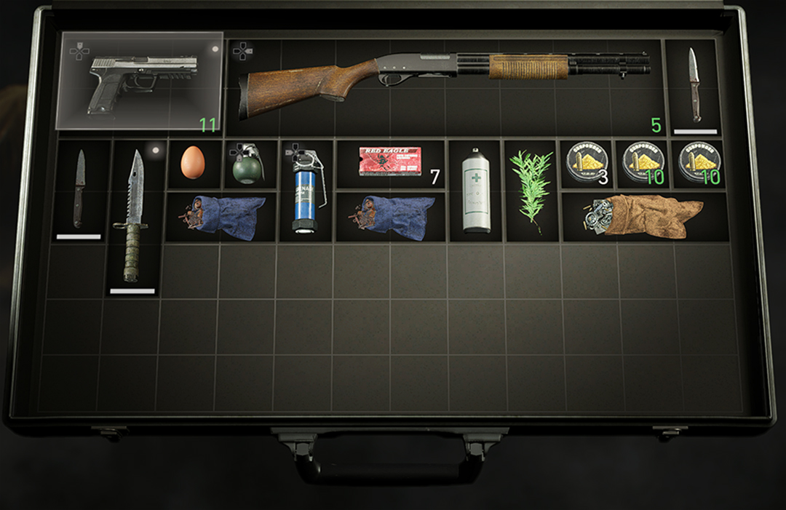
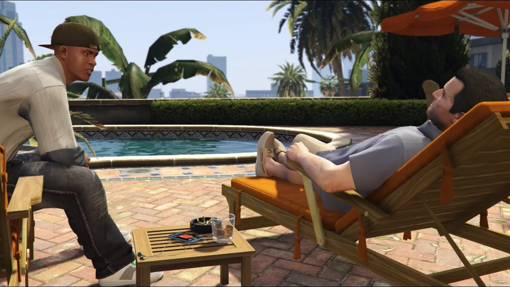

Guia Definitivo: Completar Jogos e Encontrar Coletáveis
- Planejamento Estratégico:
- Antes de começar, estude o jogo. Conheça a história, mecânicas de jogo e quaisquer sistemas de progressão.

- Exploração Inteligente:
- Não tenha pressa. Explore cada canto do mapa para encontrar segredos, coletáveis e missões secundárias.
-
Use um mapa se disponível. Marque locais importantes para retornar mais tarde.

- Dominando a Gameplay:
- Pratique as mecânicas básicas até que se tornem intuitivas.
- Domine técnicas avançadas conforme necessário, como esquivas precisas, combos e estratégias de combate.

-
Missões e Objetivos:
- Siga a história principal, mas não ignore missões secundárias. Elas podem fornecer itens valiosos e experiência adicional.
- Leia atentamente os objetivos das missões para evitar confusão.

-
Aprimorando seu Personagem:
- Use pontos de habilidade e upgrades para melhorar as habilidades do seu
- Gerencie recursos com sabedoria para maximizar o potencial do seu personagem.
-
Encontrando Coletáveis:
- Procure em áreas escondidas e em locais fora do caminho principal.
- Use guias online se estiver preso. Eles podem fornecer dicas úteis sobre a localização de coletáveis.

-
Resolução de Quebra-Cabeças:
- Leia as dicas e pistas fornecidas com cuidado.
- Se necessário, tire uma pausa e retorne com uma mente fresca.
-
Economizando Recursos:
- Não gaste recursos preciosos em itens desnecessários.
- Use itens de cura e recursos estrategicamente, especialmente em dificuldades mais altas.
-
Aproveitando ao Máximo:
- Experimente diferentes abordagens e estratégias para encontrar o que funciona melhor para você.
- Aproveite o jogo. Não se estresse muito com a conclusão rápida; desfrute da jornada.

-
Comunidade e Recursos Online:
- Participe de fóruns e comunidades online para trocar dicas e truques com outros jogadores.
- Assista a vídeos de gameplay e tutoriais para aprender com os melhores.